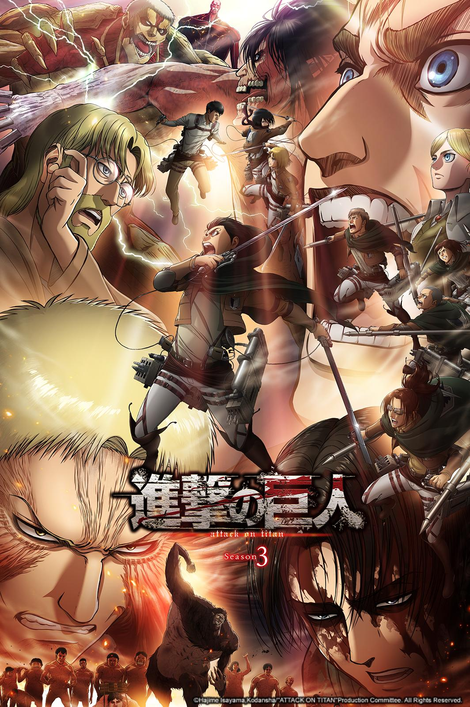

Shingeki No Kyojin
Attack On Titan
Há várias décadas, a humanidade foi quase exterminada pelo súbito aparecimento de seres humanoides conhecido como “titãs”, criaturas gigantescas e de inteligência aparentemente baixa, que devoram humanos por prazer.
No entanto, um pequeno grupo de seres humanos sobreviveu no interior de uma cidade protegida por muralhas superiores a três vezes a altura dos maiores titãs registados até a data. Durante 107 anos, a cidade fortificada foi testemunha de ataques dos titãs sem sucesso, até que um dia,
o jovem Eren Yeager, sua irmã adotiva, Mikasa Ackerman,
e seu amigo Armin Arlet, foram testemunhas da aparição de um titã colossal, fazendo uma abertura no portão exterior da Muralha Maria, o que permitiu a entrada de um grande grupo de titãs menores.
Então a série conta a trajetória de Eren, que jurou vingança e quer exterminar todos os titãs.

Voltar